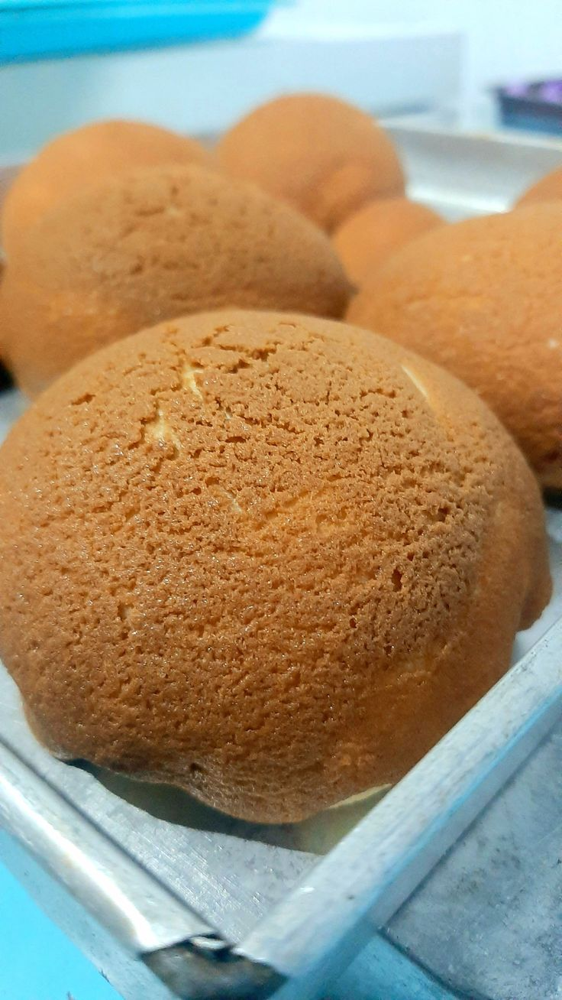

Coffee Buns Terlaris
Roti manis bertekstur kontras, memadukan kelembutan roti di dalam dengan kerenyahan lapisan kopi di luar.
- Harga
- Rp 15.000
- Berat bersih
- 80 gram
- Masa simpan
- 3–5 hari di dalam kulkas jika disimpan dalam wadah kedap udara